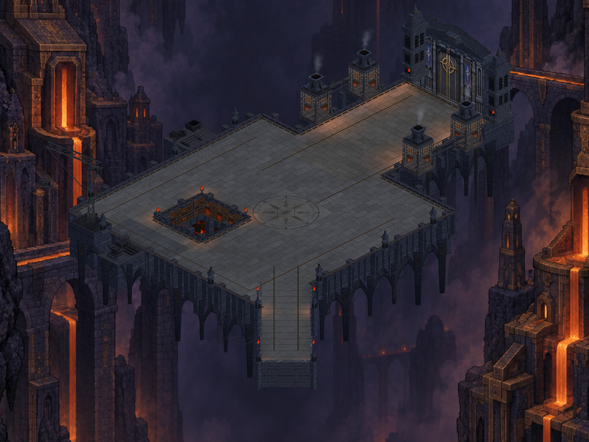

CRYPTFORGE / 29 EYLÜL 2026
Avlu taş işçiliği
Merkez mührünü çevreleyen 24 taşlı halka, kapı yolunda koyu omuz şeritleri, seyrek taş onarımları ve yumuşatılmış derzler. Gerçek Unity görüntüleri.

17 statik çizim grubu · 57.432 köşe. Bu paket telefona yüklenmedi. Hareket alanı ve savaş kuralları değişmedi.
Üretim ve doğrulama notları